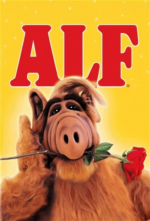

ALF (1986)
ComedyFamilyScience Fiction
| Year | 1986 |
|---|---|
| Rating | TV-G |
| Status | Completed |
| Seasons | 5 |
| Episodes | 104 |
| Genre | Comedy, Family, Science Fiction |
The Tanner family is an average American family. One day, they discover that they have a visitor. He's small, he's furry, he's arrogant, and he's an alien from the planet Melmac. Unsure what to do, they name him ALF: Alien Life Form. Alf soon decides that as much as he misses his home planet, there's a lot to be said for Earth: the Tanners are willing to concede anything as long as he doesn't announce his presence. Oh yeah, the Tanners also have a cat, which looks rather tasty...
Episodes
Specials
| # | Title | Air Date | Synopsis |
|---|---|---|---|
| 0 | A.L.F. | 1986-09-22 | Gordon Shumway, last known survivor from the planet Melmac, crash-lands his spaceship into the Tanner family's suburban garage. Willie dubs him "ALF", short for Alien Life Form. After convincing a military officer that t |
| 1 | Pilot (Unaired) | — | |
| 2 | Project: ALF | 1996-02-17 | Six years ago, the space alien ALF was on his way back to his new home when the Alien Task Force finally caught up with him. Now he is being studied at a top-secret base. There he finds allies who feel that ALF's existen |
| 3 | ALF Loves a Mystery | 1987-09-21 | ALF and Benji Gregory explore a shabby mansion hoping to find hidden treasure. During their search, they manage to preview the NBC's Saturday morning schedule of 1987. |
Season 1
| # | Title | Air Date | Synopsis |
|---|---|---|---|
| 1 | A.L.F. | 1986-09-22 | Gordon Shumway, last known survivor from the planet Melmac, crash-lands his spaceship into the Tanner family's suburban garage. Willie dubs him "ALF", short for Alien Life Form. After convincing a military officer that t |
| 2 | Strangers in the Night | 1986-09-29 | ALF decides to have some fun while a nervous Mrs. Ochmonek baby-sits Brian. |
| 3 | Looking for Lucky | 1986-10-06 | When Lucky the cat disappears, everyone pins the blame on ALF. |
| 4 | Pennsylvania 6-5000 | 1986-10-13 | ALF calls the president to address his concerns about nuclear weapons. |
| 5 | Keepin' the Faith | 1986-10-20 | ALF takes a job selling cosmetics over the phone. |
| 6 | For Your Eyes Only | 1986-11-03 | ALF befriends a lonely blind girl. |
| 7 | Help Me, Rhonda | 1986-11-10 | Willie helps homesick ALF arrange a trip to Melmac. |
| 8 | Don't It Make My Brown Eyes Blue? | 1986-11-17 | ALF has a crush on Lynn, so he makes a music video to impress her. |
| 9 | Jump | 1986-11-24 | On his 45th birthday, Willie feels unfulfilled, so ALF suggests he go skydiving. |
| 10 | Baby, You Can Drive My Car | 1986-12-01 | ALF sells parts of his spaceship to buy Lynn a Ferrari. |
| 11 | On the Road Again | 1986-12-08 | Willie loses his temper with ALF during a family camping trip. |
| 12 | Oh, Tannerbaum | 1986-12-22 | It's Christmas time. Unfortunately ALF chops the Christmas tree into firewood before anyone notices. The Tanners then have two tasks: to teach ALF all about Christmas and find a new Christmas tree. |
| 13 | Mother and Child Reunion | 1987-01-12 | ALF heads for the garage when Kate's mother pays a visit. |
| 14 | A Little Bit of Soap | 1987-01-19 | ALF submits scripts to his favorite soap opera. |
| 15 | I've Got a New Attitude | 1987-02-02 | ALF plays matchmaker for Kate's mother. |
| 16 | Try to Remember (1) / Try to Remember (2) | 1987-02-09 | ALF hits his head and is convinced he is an insurance salesman. The Tanners try reviewing past events to try and jog his memory. / The Tanners continue to try and jog ALF's memory, and deal with the police at the same ti |
| 18 | Border Song | 1987-02-16 | ALF befriends a young Mexican immigrant. |
| 19 | Wild Thing | 1987-03-02 | ALF goes through a 24-hour period of bizarre behavior. |
| 20 | Going Out of My Head Over You | 1987-03-16 | Willie and ALF both talk to a psychologist. |
| 21 | Lookin' Through the Windows | 1987-03-23 | ALF thinks he witnessed a murder at a neighbor's house. |
| 22 | It's Not Easy Being Green | 1987-03-30 | ALF comes to Brian's aid when the boy has to play an asparagus in the school play. |
| 23 | The Gambler | 1987-04-06 | ALF develops a gambling habit and winds up in trouble with his bookie. |
| 24 | Weird Science | 1987-04-13 | Brian causes trouble at school when he repeats some of ALF's intergalactic knowledge. |
| 25 | La Cucaracha | 1987-05-04 | A cockroach from ALF's spaceship grows to gigantic proportions |
| 26 | Come Fly with Me | 1987-05-11 | When Mr. Ochmonek becomes sick during a flight, ALF flies the plane. |
Season 2
| # | Title | Air Date | Synopsis |
|---|---|---|---|
| 1 | Working My Way Back to You | 1987-09-21 | ALF is relocated to the family garage as a result of his mischievous behavior. |
| 2 | Somewhere Over the Rerun (aka The Ballad of Gilligan's Island) | 1987-09-28 | ALF dreams he visits "Gilligan's Island", with castaways Gilligan, the Skipper, the Professor and Mary Ann. |
| 3 | Take a Look at Me Now | 1987-10-05 | Mrs. Ochmonek thinks she's gone crazy when she spots ALF in the backyard. |
| 4 | Wedding Bell Blues | 1987-10-12 | ALF joins a monastery after learning that his parents were married before he was born – a disgrace on the planet Melmac. |
| 5 | Prime Time | 1987-10-19 | The Tanners become a TV-ratings family and ALF decides to rig the system so that his favorite program becomes a hit. |
| 6 | Some Enchanted Evening | 1987-10-26 | ALF becomes the star attraction at the Tanners' Halloween party. |
| 7 | Oh, Pretty Woman | 1987-11-02 | ALF helps Lynn boost her self-confidence by enrolling her in a beauty pageant. |
| 8 | Something's Wrong with Me | 1987-11-09 | ALF gets a severe case of hiccups after being excluded from Dorothy and Whizzer's wedding party. |
| 9 | Night Train | 1987-11-16 | Willie and ALF hop on board a freight train in search of adventure. |
| 10 | Isn't It Romantic? | 1987-11-23 | ALF and the Tanner kids give Willie and Kate a second honeymoon. |
| 11 | Hail to the Chief | 1987-12-07 | Kate dreams that she and ALF are rival presidential candidates. |
| 12 | ALF's Special Christmas (1) / ALF's Special Christmas (2) | 1987-12-14 | ALF and the Tanners prepare to spend Christmas in a cabin. When the owner comes to visit them, ALF accidently jumps into his trunk and he is taken to a hospital and given away as a Christmas gift to a little girl. / ALF |
| 14 | The Boy Next Door | 1988-01-04 | ALF befriends the Ochmoneks' belligerent nephew, Jake. |
| 15 | Can I Get a Witness? | 1988-01-11 | ALF demands a fair trial after being accused of throwing a football through the Ochmoneks' window. |
| 16 | We're So Sorry, Uncle Albert | 1988-01-25 | ALF believes that he scared Willie's uncle to death. |
| 17 | Someone to Watch Over Me (1) | 1988-02-08 | ALF lends a hand with the neighborhood block patrol and ends up confronting a prowler in the Ochmoneks' house. |
| 18 | Someone to Watch Over Me (2) | 1988-02-15 | It's up to Willie to save ALF from the SWAT team surrounding the Ochomonek house, in which ALF had been chasing a prowler. |
| 19 | We Gotta Get Out of This Place | 1988-02-22 | ALF moves in with his blind friend, Jody, and learns some important lessons about life without sight. |
| 20 | You Ain't Nothin' But a Hound Dog | 1988-02-29 | ALF, jealous of the attention a stray dog is getting, gives the pooch to a mean old woman who claims to be the owner. |
| 21 | Hit Me with Your Best Shot | 1988-03-07 | Willie abandons his belief in pacifism after meeting the hostile father of the bully who's been pushing Brian around. |
| 22 | Movin' Out | 1988-03-14 | Willie has problems trying to sell the house because ALF keeps scaring off potential buyers with phony ghosts. |
| 23 | I'm Your Puppet | 1988-03-21 | ALF's mail-order ventriloquist's dummy takes on a life of its own, and it takes a visit from a psychiatrist to cure him. |
| 24 | Tequila | 1988-03-28 | Kate's friend, a known drinker, sees ALF in the kitchen and thinks she's hallucinating. |
| 25 | We Are Family | 1988-05-02 | ALF fantasizes that he reveals his existence to the world and serves as substitute host on David Letterman's show. |
| 26 | Varsity Drag | 1988-05-09 | ALF takes a job as a paper carrier when he learns that the cost of his upkeep is preventing Lynn from attending her first-choice college. |
Season 3
| # | Title | Air Date | Synopsis |
|---|---|---|---|
| 1 | Stop in the Name of Love | 1988-10-03 | ALF hides out in the back seat during Lynn's date at the drive-in. |
| 2 | Stairway to Heaven | 1988-10-10 | In a fantasy sequence, ALF's guardian angel shows him what the Tanners' lives would be like without him. |
| 3 | Breaking Up Is Hard to Do | 1988-10-17 | The Tanners let Trevor Ochmonek stay at their house after he has a fight with his wife. |
| 4 | Tonight, Tonight (1) | 1988-10-24 | ALF hosts "The Tonight Show", with Ed McMahon. |
| 5 | Tonight, Tonight (2) | 1988-10-24 | ALF hosts "The Tonight Show", with Ed McMahon. |
| 6 | Promises, Promises | 1988-10-31 | Betrayed confidences cause a falling-out between ALF and Lynn. |
| 7 | Turkey in the Straw (1) | 1988-11-14 | The Tanners are invited to a Thanksgiving dinner with the Ochmonek's bizarre relatives. |
| 8 | Turkey in the Straw (2) | 1988-11-15 | ALF must avoid the Alien Task Force when a bum blows the whistle on him. |
| 9 | Changes | 1988-11-21 | Kate goes back to work when a strike sends Willie home. |
| 10 | My Back Pages | 1988-11-28 | Seeing Willie and Kate reminiscing over their old stuff in the attic and show the family film footage of them attending the Woodstock festival, ALF asks Willie about the 1960s, causing Willie to ponder if he abandoned th |
| 11 | Alone Again, Naturally | 1988-12-05 | ALF mistakenly believes his cousin is living in Barstow, when he reads an article in the National Inquisitor. |
| 12 | Do You Believe in Magic? | 1988-12-12 | ALF makes Brian disappear with a mail-order magic kit. |
| 13 | Hide Away | 1989-01-09 | ALF is convinced gangsters are chasing the Tanners' houseguest. |
| 14 | Fight Back | 1989-01-16 | ALF's expose earns Willie a guest spot on David Horowitz's consumer advocate show. |
| 15 | Suspicious Minds | 1989-01-23 | ALF is convinced that a reclusive neighbor is actually Elvis Presley. |
| 16 | Baby Love | 1989-02-06 | ALF has an allergic reaction to a baby. |
| 17 | Running Scared | 1989-02-13 | An extortionist threatens to turn ALF in to the immigration authorities for being an "illegal alien". |
| 18 | Standing in the Shadows of Love | 1989-02-20 | ALF ghostwrites Jake's love letters. |
| 19 | Superstition | 1989-02-27 | ALF blames his streak of bad luck on a Melmac superstition. |
| 20 | Torn Between Two Lovers | 1989-03-06 | Lynn ends up with two dates for a dance through ALF's mishandled phone message. |
| 21 | Funeral for a Friend | 1989-03-20 | Desperate for a pet of his own, ALF acquires an ant farm. |
| 22 | Don't Be Afraid of the Dark | 1989-03-27 | ALF and Jake suggest Brian camp out to overcome his fear of the dark. |
| 23 | Have You Seen Your Mother, Baby? | 1989-04-10 | ALF sees Jake's kleptomaniac mother arrive for a visit and steal a broach from Kate. |
| 24 | Like an Old Time Movie | 1989-04-17 | ALF imagines in black and white that he and the Tanners are silent-movie stars. |
| 25 | Shake, Rattle and Roll | 1989-05-01 | ALF prepares for the worst after experiencing a mild earthquake. |
| 26 | Having My Baby | 1989-05-08 | ALF prepares for the baby's arrival by re-enacting scenes from "The Dick Van Dyke Show." |
Season 4
| # | Title | Air Date | Synopsis |
|---|---|---|---|
| 1 | Baby, Come Back | 1989-09-18 | ALF earns the right to baby-sit Eric, but almost blows it when the child disappears. |
| 2 | Lies | 1989-09-25 | Tabloid photographers accidentally photograph ALF, so the Tanners have to get the film back. |
| 3 | Wanted: Dead or Alive | 1989-10-02 | ALF shields Willie when a criminal resembling him is profiled on a crime-stopper TV show, but Trevor turns him in. |
| 4 | We're in the Money | 1989-10-09 | Using Willie's home computer, ALF discovers and later becomes addicted to the art of making stock-market deals. |
| 5 | Mind Games | 1989-10-16 | After a visit from a psychologist, ALF subjects the Tanners to a barrage of unwanted psychoanalysis. |
| 6 | Hooked on a Feeling | 1989-10-23 | Willie, in an effort to curb ALF's cotton addiction, holds a support group meeting in his living room. |
| 7 | He Ain't Heavy, He's Willie's Brother | 1989-10-30 | ALF, forced to hide, plots the removal of Willie's visiting brother Neal. |
| 8 | The First Time Ever I Saw Your Face | 1989-11-06 | ALF gets peeved about having to remain hidden while Willie's brother extends his visit. |
| 9 | Live and Let Die | 1989-11-13 | ALF's attitude toward cats changes after his first encounter with kittens. |
| 10 | Break Up to Make Up | 1989-11-20 | Whizzer comes face-to-face with ALF when he searches for Dorothy at the Tanners. |
| 11 | Happy Together | 1989-11-27 | ALF, on the outs with the Tanners, is offered a place to stay by Neal. |
| 12 | Fever | 1989-12-04 | The Tanners pamper ALF after he catches his first Earth cold. |
| 13 | It's My Party | 1989-12-11 | ALF is relegated once again to the attic when the Tanners throw a Hawaiian luau. |
| 14 | Make 'em Laugh | 1990-01-08 | ALF dreams he's a famous stand-up comic. |
| 15 | Love on the Rocks | 1990-01-15 | Neal and his ex-wife Margaret reconcile, but ALF goes a long way to prove her motives are less than honest. |
| 16 | True Colors | 1990-01-22 | ALF enters the art world after he earns praise for a still life made from food. |
| 17 | Gimme That Old Time Religion | 1990-01-29 | As a newly ordained Melmacian minister, ALF must officiate a ceremony on Earth. |
| 18 | Future's So Bright, I Gotta Wear Shades | 1990-02-05 | ALF considers the future with the Tanners, who will age faster than the ageless alien. |
| 19 | When I'm Sixty-Four | 1990-02-12 | ALF encounters youth-seeking senior citizens when he's discovered sneaking into a retirement home. |
| 20 | Mr. Sandman | 1990-02-19 | ALF and Willie scour Death Valley for buried treasure after discovering an old map. |
| 21 | Stayin' Alive | 1990-02-26 | A morally outraged ALF writes nasty letters to a pollution-producing company. |
| 22 | Hungry Like a Wolf | 1990-03-03 | ALF takes to the park in search of food after his diet fails. |
| 23 | I Gotta Be Me | 1990-03-10 | ALF is the only one excited by the idea of Lynn moving in with her boyfriend. |
| 24 | Consider Me Gone | 1990-03-24 | It's a sad day in the Tanner household as ALF announces he's leaving Earth to settle on another planet with Skip and Rhonda, but ALF is captured by the Alien Task Force before he can get to their spaceship. |